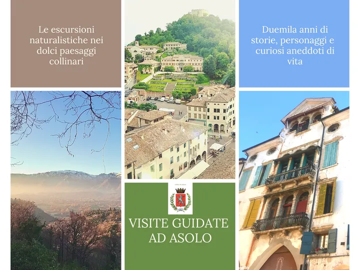

da dom 1 nov a dom 29 nov
Visite guidate e laboratori nel borgo di Asolo
Calendario delle visite guidate e dei laboratori organizzati dal Comune di Asolo e dal Museo Civico per scoprire la natura, la storia e gli eventi della perla della Marca Trevigiana.
 Indicazioni
Indicazioni
- Costi e prenotazioni
- Costo non indicato · Prenotazione non indicata
- Programma
- Programma da verificare. Apri la fonte ufficiale per orari e possibili aggiornamenti.
- In caso di maltempo
- Nessuna indicazione specifica pubblicata.
- Note
- Acquisito automaticamente dalla fonte.
L’EVENTO
Descrizione completa
Calendario delle visite guidate e dei laboratori organizzati dal Comune di Asolo e dal Museo Civico per scoprire la natura, la storia e gli eventi della perla della Marca Trevigiana.
Domenica 1 novembre, ore 16:00 Caccia al tesoro di Halloween Laboratorio per bambini Il Museo Civico di Asolo vi aspetta per una speciale attività dedicata ai bambini!
Domenica 8 novembre, ore 16:00 "Scopri la collezione" Visita guidata del Museo Il Museo di Asolo ti invita a compiere un viaggio attraverso i secoli: dai resti dell'Acelum romano al profumo di Guerlain di Eleonora Duse, dai viaggi di Freya Stark alle storie nascoste dietro i volti dei dipinti della galleria.
Domenica 15 novembre, ore 10:00 Passeggiata alla scoperta del Monte dei Frati a cura dello storico locale Emmanuele Petrin Emmanuele Petrin vi guiderà alla scoperta di uno dei luoghi più suggestivi e ricchi di fascino del territorio asolano.
Sabato 21 novembre, ore 16:30 Le terme romane di Asolo: frequentatori e pratiche quotidiane Relatrice: prof.ssa Alessia Zangrando (Università di Bologna) Come si viveva l’esperienza termale nell’antica Asolo? Un viaggio tra le testimonianze archeologiche per scoprire le terme romane come luoghi di igiene, benessere e socialità.
Domenica 29 novembre, ore 16500 Dalle tessere all'opera. Workshop di mosaico. Attività pratica per adulti e bambini
Sabato 28 novembre, ore 10:00-11:30-14:30-16:00 "Asolo Sotterranea - Visita speleologica all'acquedotto romano di Bot" Un'esperienza unica ti aspetta per scoprire uno dei luoghi più antichi e segreti di Asolo: l'incredibile acquedotto di Bot, costruito dai Romani nel lontano I secolo a.C.
Domenica 29 novembre, ore 16:00 Piccoli Klimt all'opera Laboratorio per bambini
Per tutti gli eventi, la prenotazione è obbligatoria e sarà confermata con un numero minimo di partecipanti.
IL PROGRAMMA
Programma e orari
Appuntamenti raccolti dalle fonti elencate. Dove manca un orario, non è ancora disponibile in questa scheda.
Programma pubblicato
- 2026-11-01 — 2026-11-01 · 16:00:00
- 2026-11-08 — 2026-11-08 · 16:00:00
- 2026-11-15 — 2026-11-15 · 11:00:00
- 2026-11-21 — 2026-11-21 · 16:30:00
- 2026-11-22 — 2026-11-22 · 15:00:00
- 2026-11-28 — 2026-11-28 · 10:00:00
- 2026-11-29 — 2026-11-29 · 16:00:00
INFORMAZIONI UTILI
Prima di partire
- Controllare la fonte prima di partire.
ORGANIZZAZIONE